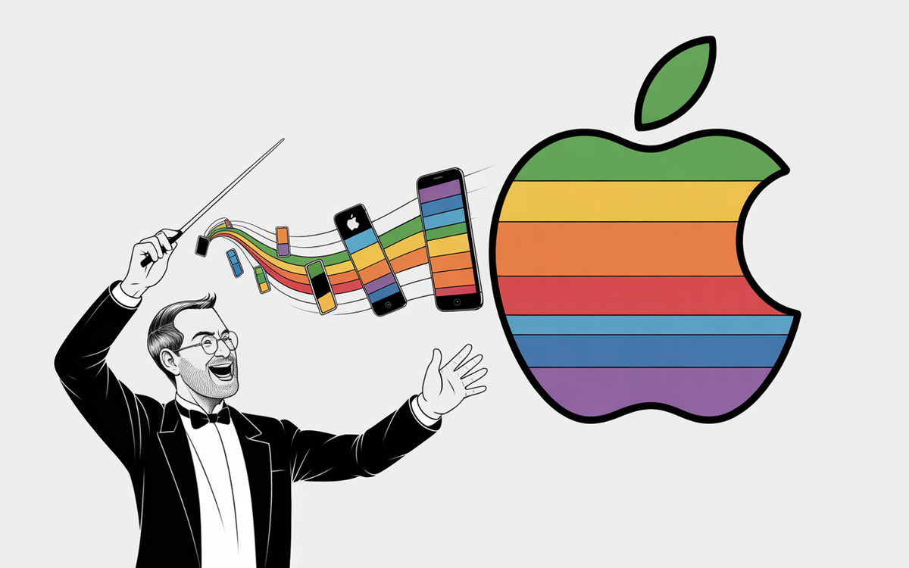

:: Now begins a story...
May I present to you, a finely curated section of a fine collection of the wonderful web we weave with a weekly roundup of bits and pieces from the far corners of the super information highway that I like to call — Token Wisdom ✨


"The future belongs to those who learn more skills and combine them in creative ways."

Editor's Notes 📆
Week 22 of 52 // May 25th 🧿 31st, 2025
Welcome to the 110th edition! This week we dive deep into the intensifying AI revolution in white-collar work, mysterious hardware developments from tech giants, and breakthrough achievements in physics and manufacturing. From MIT's ambitious manufacturing initiative to China's concerning advances in surveillance technology, we're witnessing a transformation of both workplace and society.
The convergence of AI capabilities, manufacturing innovation, and emerging security concerns continues to reshape our professional and technological landscape.


Enjoy The Newest Latest, A Closer Look & Time Well Spent!

🎉 Newest / Latest
100% Authentic Humanly Chosen

AI Disruption, Tech Innovation, and Manufacturing Evolution
This week's collection explores the profound impact of AI on white-collar employment, groundbreaking developments in hardware and manufacturing, and significant advances in theoretical physics. Discover how organizations are adapting to AI-driven transformation, alongside mathematical breakthroughs and emerging security concerns.
We highlight how technology is reshaping traditional industries while raising important questions about privacy, security, and the future of work. Join us as we navigate this transformative period in technological history.
- Behind the Curtain: Top AI CEO Foresees White-Collar Bloodbath
A stark warning about AI's impact on professional jobs that few are noticing. Read more at Axios - OpenAI's Secret Hardware Project Has People Laughing
Jony Ive and OpenAI's mysterious collaboration raises eyebrows and questions. Explore at Futurism - China's New Laser Tech Can Read Your Secrets From a Mile Away
Revolutionary surveillance technology sparks global privacy concerns. Learn more at Sustainability Times - Mathematicians Solve 125-Year-Old Physics Problem
A breakthrough linking mechanics, thermodynamics, and fluid equations. Dive in at Earth.com - MIT Launches Initiative for New Manufacturing
A comprehensive effort to revitalize U.S. industrial production. Read at MIT News - Newark's Airport Crisis: A Warning for Everyone
Air traffic control problems reveal deeper infrastructure issues. More at The Verge - Guardians of AI: Keeping AI Safe and Ethical
Interview with Daniel Olsher on responsible AI development. Read at Medium - From Pump Station to Dream Home
An inspiring story of architectural innovation and adaptation. Explore at Dwell - Opinion | Elon Musk's Legacy Is Disease, Starvation and Death
His decimation of U.S.A.I.D. has had fatal consequences. Read at The New York Times - I tried 100+ MCP Servers and Here's my Top 10
Let's face it—modern development moves fast. And with so many tools out there, staying efficient... Read at Dev.to
*CAUTION: Side effects might include sudden career anxiety, an irresistible urge to cover all your windows with aluminum foil, or finding yourself explaining to your boss why you've converted the office pump station into a loft-style workspace.
This uncanny prediction is endorsed by the Association of Concerned Career Counselors, verified by a consortium of laser-resistant privacy experts, and approved by a robot boxer who just won their first championship bout.
👁️ A Closer Look
Unearthing gems in the digital landscape.

Because in the ever-evolving tech world, there's always more to learn and laugh about.
The Art of Productive Theft
Steve Jobs' Real Genius
"Good artists copy, great artists steal." When Picasso said this, he couldn't have known he was writing Steve Jobs' playbook. From "borrowed" interfaces to "inspired" designs, explore how Jobs transformed tech history by perfecting the art of productive theft. Because sometimes, true innovation isn't about being first – it's about being unforgettable. 🍎
 🌶️ iamkhayyam
🌶️ iamkhayyam
A Closer Look: Explorations in Technology
Weekly essay in the areas of blockchain, artificial intelligence, extended reality, quantum computing, and all the bits and pieces.

A Closer Look: Explorations in Technology
Weekly essay in the areas of blockchain, artificial intelligence, extended reality, quantum computing, and all the bits and pieces.


📺 Time Well Spent
Top Ten of the Time I Spend

From White-Collar Disruption to Robot Boxing
Visual Tales of Tech Evolution
This week's video collection captures the dramatic transformation of work, leisure, and society through technological advancement. Experience the impact of AI on traditional professions, witness the first-ever robot boxing match, and explore the resurgence of digital piracy through compelling visual narratives.
Discover the intersection of human ingenuity and mechanical innovation, navigate the changing entertainment landscape, and witness groundbreaking developments at technology's cutting edge.
- Unitree G1 Robot Boxing Match: World's First
Experience the historic debut of mechanical combat sports. Watch on YouTube - We Went to the Town Elon Musk Is Poisoning
Investigating the environmental impact of xAI's massive data center. View on YouTube - Meet Bjorn, the Easy to Build Hacking Tool
DIY network security with Raspberry Pi. Learn more on YouTube - Streaming Was a Mistake
Analysis of why streaming services are losing Gen Z viewers. Watch on YouTube - AI 2027: A Realistic Scenario of AI Takeover
Exploring potential future implications of AI development. See it on YouTube - He Set Up a TRAP for the Cops
A lesson in civilian rights and surveillance. View on YouTube - Every Level of Wealth in 13 Minutes
Understanding modern wealth distribution. Watch on YouTube - Voyager 2's Mysterious Message
New developments from the depths of space. Explore on YouTube - Mark Zuckerberg's Suspicious Rebrand
Analyzing the motives behind the Meta CEO's transformation. Watch on YouTube - The Man Behind Zoltar
Discovering the secrets of mechanical fortune-telling. View on YouTube
*This remarkable skill set has been certified by the Association of Displaced White-Collar Workers, verified by an ensemble of robot boxing referees, and approved by the International Society for Laser-Proof Fashion Design.
CAUTION: Please exercise discretion when attempting to build hacking tools, organize robot fighting leagues, or challenge surveillance systems without proper authentication by the Bureau of Mechanical Combat and Digital Defense. The tech pioneers in Silicon Valley neither confirm nor deny these findings, being too busy designing secret gadgets while teaching their AI assistants to predict which jobs they'll eliminate next.

✨Token Wisdom
Knowledge Transmuted
In this 110th edition of Token Wisdom, we've explored the looming transformation of white-collar work through AI advancement, as highlighted in "The Newest Latest." Our journey through "Time Well Spent" reveals technology's impact across society, from revolutionary manufacturing initiatives to the emergence of robot sports leagues.
This week's insights paint a picture of rapid technological change, driving both innovation and anxiety. We've seen how AI is reshaping professional work, with industry leaders warning of massive disruption ahead. Meanwhile, breakthrough developments in physics, manufacturing, and surveillance technology underscore the accelerating pace of innovation.
As we witness the rise of mechanical sports and novel security challenges, we're also confronting fundamental questions about privacy, employment, and the future of human agency. The convergence of AI capabilities, advanced manufacturing, and emerging entertainment forms suggests we're entering a new era of technological integration.
Navigating this transformative landscape requires us to balance innovation with responsibility, progress with privacy, and automation with human agency. As we stand at this technological crossroads, our collective journey involves not just adapting to change, but shaping its direction.

🌈💫 The Less You Know
The More You Learn
Latest Technologies & Innovations:
- AI Job Displacement: Impact on white-collar professions
- Advanced Surveillance: Laser-based text detection systems
- Robot Combat Systems: Mechanical sports technology
- Manufacturing Innovation: MIT's new industrial initiative
- Theoretical Physics: Solutions to century-old problems
- DIY Security Tools: Raspberry Pi-based systems
- Streaming Technology: Evolution of digital content delivery
- Environmental Monitoring: Data center impact assessment
Most Important Topics:
- AI Workforce Impact: Professional job displacement
- Privacy Concerns: Advanced surveillance capabilities
- Manufacturing Revolution: U.S. industrial transformation
- Infrastructure Challenges: Air traffic control systems
- Theoretical Breakthroughs: Physics problem solutions
- Entertainment Evolution: Streaming service challenges
- Mechanical Sports: Robot boxing emergence
- Environmental Impact: Tech infrastructure effects
Acronyms:
- AI - Artificial Intelligence
- MIT - Massachusetts Institute of Technology
- xAI - Elon Musk's AI Company
- MCP - Multi-Computing Platform
- CEO - Chief Executive Officer
- DIY - Do It Yourself
- FTC - Federal Trade Commission
- USA - United States of America
- CIA - Central Intelligence Agency
Technical Terms:
- Laser Interferometry: Advanced optical detection systems
- White-Collar Automation: AI replacement of professional jobs
- Robot Combat Protocols: Guidelines for mechanical sports
- Manufacturing Innovation Framework: Industrial transformation systems
- Theoretical Physics Solutions: Mathematical breakthrough applications
- Network Security Tools: DIY cybersecurity systems
- Content Delivery Networks: Streaming infrastructure
- Environmental Impact Assessment: Tech infrastructure analysis
Just because Jon Snow knows nothing, doesn’t mean you have to.
Embrace the pursuit of knowledge to shape a better tomorrow. Sign up for more Token Wisdom and carry the torch of foresight into the fathomless domains of innovation and beyond.
"The wise one knows: as we perfect our tools, we must not lose sight of their purpose. Each technological leap forward should illuminate not just what we can do, but what we should do."
— Token Wisdom ✨
Until next time: stay smart, and kind, and definitely stay weird!
Become a Token Wisdom subscriber
Illuminate your inbox with the light of knowledge. ✨

Thank you for cruising by the Cult of Innovation
We’re making some Stone Soup here. If you enjoyed this amuse-bouche of news compilations in bite-sized morsels, please share it with your friends and help feed a community. Mmmm. #nomnom.